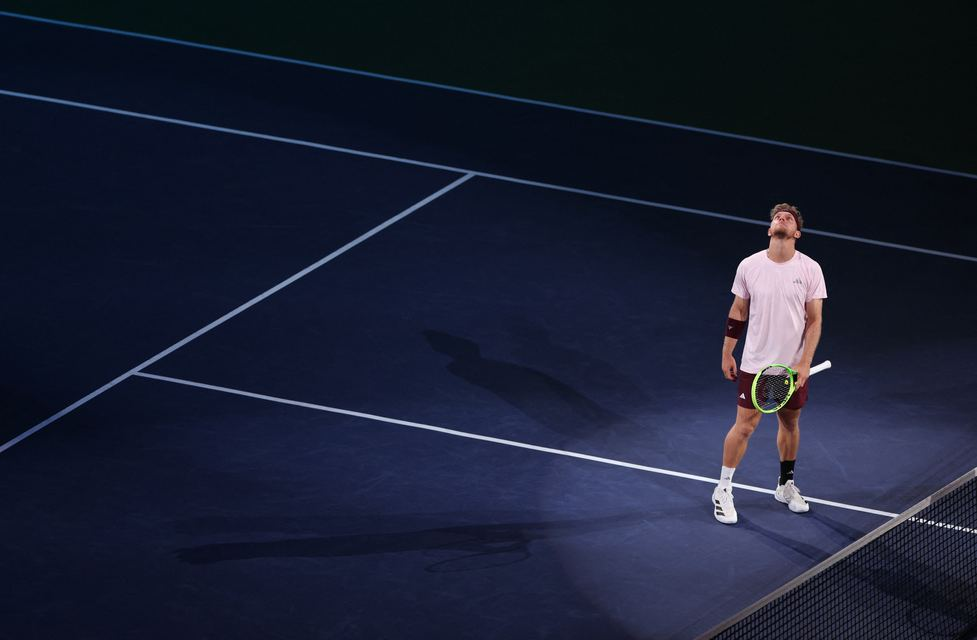

Davidovich vuelve a caerse de la Copa Davis: “Duele, pero mi cuerpo necesita más tiempo”

El malagueño, ausente desde que triunfase en Shanghái, renuncia a las Finales y Ferrer cita a Dani Mérida, que se suma a Alcaraz, Jódar, Granollers y Martínez
Iba España con todo a Bolonia, dispuesta a lograr, esta vez sí, la Ensaladera que se le resiste desde 2019, fecha del sexto y último entorchado. Sin embargo, ayer se produjo un giro de guion. De nuevo, se cae de la lista Alejandro Davidovich, ausente hace un año —no fue citado en la primera nómina de cuatro, y luego se autodescartó como quinto hombre— y también en las Finales que comenzarán el día 24, próximo martes. El andaluz, de 27 años, anunció que no termina de encontrarse bien desde el punto de vista físico y que no podrá ayudar, pese a haber sido incluido en la convocatoria que emitió David Ferrer en la sede del Consejo Superior de Deportes (CSD) el 26 de octubre.
Davidovich ha disputado este curso 49 partidos, con un balance de 33 triunfos y 16 derrotas. Además de no haber podido acudir a Basilea ni París, también se había inscrito en Estocolmo (250), aunque los problemas de espalda le han impedido continuar.
Quien sigue y sigue es Granollers (40), que este lunes logró una victoria en su primer compromiso maestro en el dobles. Él y el argentino Horacio Zeballos superaron por un doble 6-4 (en 1h 18m) a la pareja formada por Simone Bolelli y Andrea Vavassori.